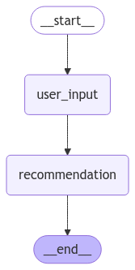

🧩 Tema 3: State Schema
🚀 ¿Qué es el State Schema?
El State Schema en LangGraph define la estructura de datos que viaja a través de un grafo durante su ejecución.
Es como el “ADN” del flujo, que transporta y actualiza información a medida que se avanza por diferentes nodos, piensa en el estado como una mochila 🧳 que lleva datos entre los nodos, la cual vamos llenando o vaciando a medida que vamos necesitando.
🧠 ¿Por qué es importante?
El State Schema permite:
- Controlar y validar los datos que circulan por el grafo.
- Definir tipos de datos específicos (texto, listas, enteros, etc.) para evitar errores.
- Modificar y actualizar atributos a lo largo del flujo.
Imagina que estás construyendo un asistente virtual:
- El State podría contener atributos como el nombre del usuario, historial de mensajes y preferencias.
- A medida que la conversación avanza, los nodos modifican o consultan estos atributos.
⚙️ ¿Cómo se Define el State Schema?
Para definir un State personalizado, utilizamos TypedDict. Esto nos permite crear una plantilla de estado con atributos específicos y sus respectivos tipos.
📋 Ejemplo: Creación de un State con Varios Atributos
from typing_extensions import TypedDict
from typing import Literal
class State(TypedDict):
name: str
age: int
preferences: Literal["Videojuegos","Programación"]
🧩 Explicación:
TypedDictcrea una plantilla para el estado.nameyageson atributos que definen el nombre y edad de un usuario.preferenceses una lista que guarda intereses o preferencias. UsandoLiteralforzamos a que la aplicación solamente guarde esos terminos en concreto.
Con esto, aseguramos que el estado tenga una estructura clara y solo acepte los tipos de datos definidos.
🔄 ¿Cómo Funciona el State en un Grafo?
El State fluye de un nodo a otro, llevando consigo información que puede ser modificada, eliminada o ampliada.
Cada nodo puede:
- Leer atributos del estado.
- Modificar datos existentes.
- Agregar nuevos atributos si es necesario.
Esto nos permite construir flujos dinámicos y adaptativos, donde el grafo evoluciona según las interacciones del usuario o los cálculos realizados.
🛠️ Ejemplo Completo con Nodos
Vamos a construir un grafo que:
1. Reciba el nombre y edad del usuario.
2. Modifique el estado agregando una preferencia de acuerdo con la edad.
📋 Definiendo Nodos para Modificar el Estado
def user_input_node(state: State):
print("--- Nodo 1: Recibir Usuario ---")
state["name"] = "Raul"
state["preferences"] = []
return state
def recommendation_node(state: State):
print("--- Nodo 2: Recomendación ---")
if state["age"] < 18:
state["preferences"].append("Videojuegos")
else:
state["preferences"].append("Programación")
return state
- Nodo
user_input_node: Toma el nombre, inicializa las preferencias y los añade al estado. - Nodo
recommendation_node: Agrega recomendaciones basadas en la edad del usuario.
🏗️ Construcción del Grafo
from langgraph.graph import StateGraph, START, END
builder = StateGraph(State)
builder.add_node("user_input", user_input_node)
builder.add_node("recommendation", recommendation_node)
builder.add_edge(START, "user_input")
builder.add_edge("user_input", "recommendation")
builder.add_edge("recommendation", END)
graph = builder.compile()
Explicación de cada paso:
1. Creamos el grafo con StateGraph.
2. Añadimos los nodos.
3. Definimos el flujo:
- El grafo comienza en START y pasa por user_input_node.
- Luego se dirige a recommendation_node antes de finalizar (END).
📈 Visualización del Grafo
Para observar cómo se estructura nuestro grafo, generamos una visualización:

🚀 Invocando el Grafo y Resultados
Ejecución del Grafo
--- Nodo 1: Recibir Usuario ---
--- Nodo 2: Recomendación ---
{'name': 'Raul', 'age': 40, 'preferences': ['Programación']}
- Si el usuario tiene menos de 18 años, el grafo recomienda videojuegos.
- Si tiene 18 o más, se recomienda programación.
🔎 Recursos:
- Ver notebook en Google Colab
- Ver Más ejemplos en Google Colab
 Guía: State
Guía: State
🧑🏫 ¿Qué Hemos Aprendido?
- State Schema: Define la estructura de datos que viaja por el grafo.
- TypedDict: Permite definir el esquema con tipos específicos, asegurando que el estado tenga una estructura clara y validada.
- Nodos y Estado: Los nodos pueden modificar y ampliar el estado, creando flujos dinámicos.
Literal: Podemos filtar la información que vamos a manejar.
🌐 ¿Qué es lo Siguiente?
En el próximo tema, profundizaremos en el uso de Memoria en LangGraph.
Aprenderemos cómo usar MemorySaver para almacenar datos a lo largo de múltiples invocaciones, creando flujos de trabajo que recuerdan información pasada.